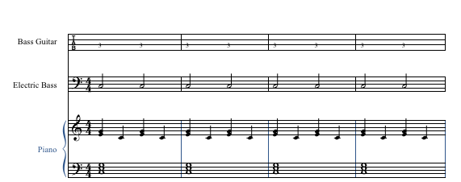
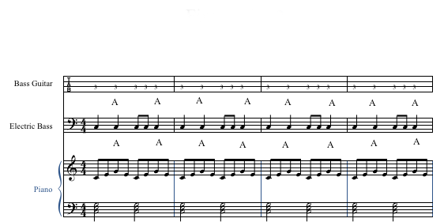
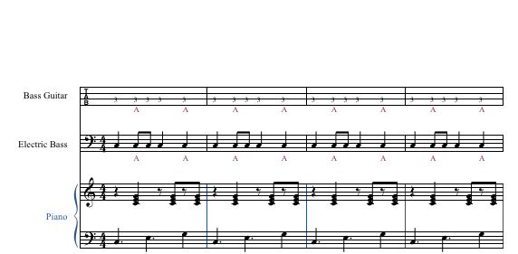
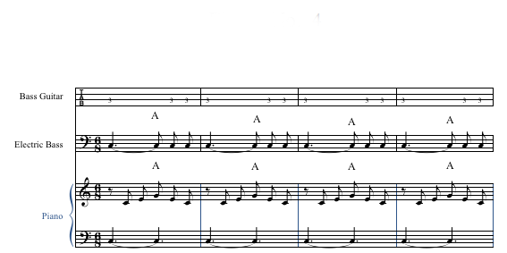
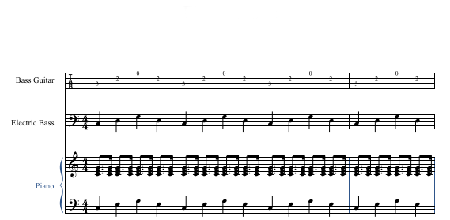
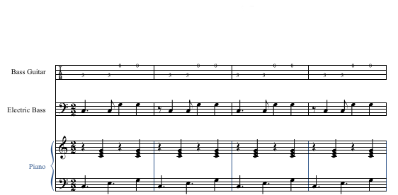
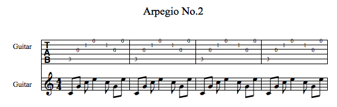

ANEXO 2. Patrones ritmo armónicos para músicas urbanas
A continuación se presentan algunos patrones ritmo-armónicos que servirán de referencia en el estudio de las músicas urbanas, siendo más bien una alternativa, sin pretender convertirse en la única vía hacia su abordaje.
Lo que se busca realmente en esta práctica es ir asociando los elementos ritmo-armónicos trabajados en formación inicial y básica (pulso, acento, subdivisiones y ostinatos), a la dinámica de los géneros y distintos formatos, buscando a través de ellos, acercamientos a las formas de grafía tradicional de una manera menos convencional.
Hemos seleccionado los instrumentos base de estas músicas que de una u otra forma se consolidan como el pilar de los diferentes formatos.
BATERÍA
Patrones rítmicos balada rock y rock
figura 22. Patrón rítmico N° 1
Fuente: figura realizada por Gustavo González Palencia para esta publicación.
figura 23. Patrón rítmico N° 2
Fuente: figura realizada por Gustavo González Palencia para esta publicación.
figura 24. Patrón rítmico N° 3
Fuente: figura realizada por Gustavo González Palencia para esta publicación.
Patrones rítmicos blues y rock and roll
figura 25. Patrón rítmico N° 4
Fuente: figura realizada por Gustavo González Palencia para esta publicación.
figura 26. Patrón rítmico N° 5
Fuente: figura realizada por Gustavo González Palencia para esta publicación.
Patrones rítmicos champeta y reggaetón
figura 27. Patrón rítmico N° 6
Fuente: figura realizada por Gustavo González Palencia para esta publicación.
PIANO Y BAJO
Patrones ritmo-armónicos, balada rock y rock
figura 28. Patrón ritmo-armónico N° 1
Fuente: figura realizada por Gustavo González Palencia para esta publicación.
figura 29. Patrón ritmo-armónico N° 2
(A) Significa apagar el sonido en ese tiempo, con la mano derecha.
Fuente: figura realizada por Gustavo González Palencia para esta publicación.
figura 30. Patrón ritmo-armónico N° 3
Fuente: figura realizada por Gustavo González Palencia para esta publicación.
figura 31. Patrón ritmo-armónico N° 4
Fuente: figura realizada por Gustavo González Palencia para esta publicación.
Patrones ritmo-armónicos, blues y rock and roll
figura 32. Patrón ritmo-armónico N° 5
Fuente: figura realizada por Gustavo González Palencia para esta publicación.
figura 33. Patrón ritmo-armónico N° 6
Fuente: figura realizada por Gustavo González Palencia para esta publicación.
figura 34. Patrón ritmo-armónico N° 7
Fuente: figura realizada por Gustavo González Palencia para esta publicación.
figura 35. Patrón ritmo-armónico N° 8
Fuente: figura realizada por Gustavo González Palencia para esta publicación.
figura 36. Estructura de acordes mayores y menores

Fuente: figura realizada por Gustavo González Palencia para esta publicación.
figura 37. Relación de acordes Mayores con su relativo menor
Fuente: figura realizada por Gustavo González Palencia para esta publicación.
figura 38. Aplicación de acordes a los ciclos armónicos con transposición.
Fuente: figura realizada por Gustavo González Palencia para esta publicación.
PROPUESTA PARA RASGUEOS, ARPEGIOS Y ESCALAS PENTATÓNICAS EN LA GUITARRA
figura 39. Rasgueos en la guitarra
Fuente: figura realizada por Gustavo González Palencia para esta publicación.
figura 40. Arpegio N° 1
Fuente: figura realizada por Gustavo González Palencia para esta publicación.
figura 41. Arpegio N° 2
Fuente: figura realizada por Gustavo González Palencia para esta publicación.
figura 42. Arpegio N° 3
Fuente: figura realizada por Gustavo González Palencia para esta publicación.
figura 43. Escala pentatónica menor
Fuente: figura realizada por Gustavo González Palencia para esta publicación.
ESTRUCTURA RITMICO-ARMÓNICA: SALSA (CLAVE 3/2 y 2/3) Y MERENGUE
Convenciones:
Timbales y maracas: mano izquierda >= I.
mano derecha = D.
Congas: mano izquierda; B= base, P= punta.
mano derecha: Q= quemao ,A= abierto.
Bongós: mano izquierda; D= dedos, Dp= dedo pulgar
mano derecha: M=martillo, A= abierto.
Güiro: B= baja, S= sube.
figura 44. Estructura ritmo-armónica N° 1
Fuente: figura realizada por Gustavo González Palencia para esta publicación.
figura 45. Estructura ritmo-armónica N° 2
Fuente: figura realizada por Gustavo González Palencia para esta publicación.
figura 46. Estructura ritmo-armónica N° 3
Fuente: figura realizada por Gustavo González Palencia para esta publicación.